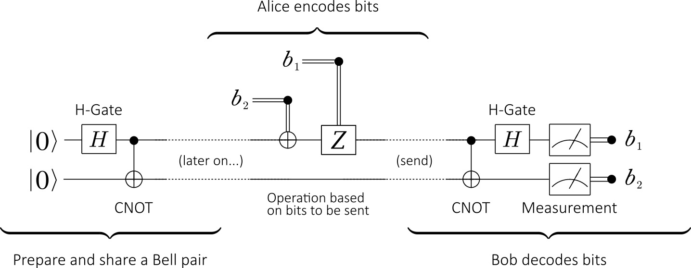

[1]:
%%bash
if ! python -c "import quairkit" 2>/dev/null; then
pip install quairkit
fi
if ! command -v pdftotext &> /dev/null; then
conda install -c conda-forge poppler
fi
Superdense coding¶
Copyright (c) 2025 QuAIR team. All Rights Reserved.
This tutorial aims to introduce the Superdense Coding protocol. We will explore the background and importance of this protocol, its specific implementation process, and how to simulate it using QuAIRKit.
Table of Contents
[2]:
import torch
import quairkit as qkit
from quairkit.database import *
from quairkit import Circuit
Introduction¶
The coding and operation of classical computers are based on Boolean logic algebra, and a single bit is a binary number of 0 and 1, which means one classical bit can encode one bit of information at most. However, with the discovery of quantum entanglement and the introduction of Bell states, Bennett and Wiesner proposed a quantum coding protocol in 1992 [1]. This protocol uses the entangled nature of qubits to transmit the information of two classical bits through one qubit, thereby realizing a communication method with larger capacity and higher efficiency. This way of using quantum entanglement to achieve high-capacity coding is called quantum superdense coding, and it is an important application of quantum mechanics in coding. Experimentally, the quantum superdense coding protocol was verified by Mattle et al. through photon polarization experiments in 1996 [2].
It should be highlighted that the concepts of quantum superdense coding and quantum teleportation should not be confused. Here we will make a simple comparison:
Quantum superdense coding transmits two classical bits of information through one qubit.
Quantum teleportation transmits one of qubit information through two classical bits of information.
At the same time, both protocols use quantum entanglement as a resource.

Figure 1. The quantum circuit for superdense coding
The diagram above shows the quantum circuit for superdense coding. The entire process is divided into three steps:
Initialization: First, an entanglement source produces a pair of entangled qubits in a Bell state, typically the \(|\Phi^+\rangle\) state. These two qubits are then distributed to Alice and Bob, serving as their shared quantum channel.
Encoding: Alice, based on the two classical bits she wishes to send (00, 01, 10, or 11), performs a specific quantum gate operation (\(U\)) on her qubit (\(q_A\)). After the operation, she sends her qubit to Bob.
Decoding and Measurement: Bob now possesses the complete entangled pair. He performs a decoding operation on these two qubits (first a CNOT gate, then a Hadamard gate) and then measures them. The measurement outcome will correspond to Alice’s intended two-bit classical message with 100% probability.
The Protocol¶
In this section, we will detail the three core steps of superdense coding: initialization, encoding, and decoding, providing mathematical descriptions and the corresponding QuAIRKit code implementations.
Initialization¶
Before the protocol begins, Alice and Bob must share a pair of entangled qubits. The standard procedure is to prepare one of the four Bell states; we will use the most common one, \(|\Phi^+\rangle\), as our example. Its mathematical expression is:
After this Bell state is generated by an entanglement source, the first qubit (\(q_A\)) is sent to Alice, and the second (\(q_B\)) is sent to Bob. Now, even though Alice and Bob may be far apart, their respective qubits are strongly correlated.
In QuAIRKit, we can directly call the bell_state function from the database module to create this entangled state.
[3]:
r"""
Prepare the shared entangled state
"""
num_qubits = 2
# 1. Initialization: Create a Bell state
shared_entangled_state = bell_state(num_qubits)
print("Initial shared entangled state |Φ+>:")
print(shared_entangled_state.ket)
Initial shared entangled state |Φ+>:
tensor([[0.7071+0.j],
[0.0000+0.j],
[0.0000+0.j],
[0.7071+0.j]])
Encoding¶
Alice’s task is to perform an operation on her qubit, \(q_A\) (the 0th qubit in the system), based on the two-bit classical message she wants to send. The rules for the operation are shown in the table below, where each classical message corresponds to a specific quantum gate operation.
Classical Bits |
Alice’s Operation (Gate) |
Action on \(q_A\) |
Resulting Bell State |
Mathematical Expression |
|---|---|---|---|---|
00 |
\(I\) (Identity) |
\((I \otimes I)\) |
\(\ket{\Phi^+}\) |
\(\frac{1}{\sqrt{2}}(\ket{00} + \ket{11})\) |
01 |
\(X\) (Pauli-X) |
\((X \otimes I)\) |
\(\ket{\Psi^+}\) |
\(\frac{1}{\sqrt{2}}(\ket{10} + \ket{01})\) |
10 |
\(Z\) (Pauli-Z) |
\((Z \otimes I)\) |
\(\ket{\Phi^-}\) |
\(\frac{1}{\sqrt{2}}(\ket{00} - \ket{11})\) |
11 |
\(iY\) (\(Z \cdot X\)) |
\((ZX \otimes I)\) |
\(\ket{\Psi^-}\) |
\(\frac{1}{\sqrt{2}}(\ket{01} - \ket{10})\) |
After performing the operation, Alice sends her qubit \(q_A\) through a quantum channel to Bob. Now, Bob possesses the complete, encoded entangled pair.
In QuAIRKit, we can use the Circuit class to simulate Alice’s encoding operation. A Circuit object can be applied to a State object to evolve it into a new quantum state.
[4]:
# Assume Alice wants to send the classical message '10'
# 2. Encoding: Alice creates a quantum circuit with only a Z gate and specifies that it acts on qubit 0
alice_encoding_circuit = Circuit(num_qubits)
alice_encoding_circuit.z(0)
# Alice applies her operation to the shared entangled state
state_after_encoding = alice_encoding_circuit(shared_entangled_state)
print("After Alice sends '10', the system's state becomes |Φ->:")
print(state_after_encoding.ket)
After Alice sends '10', the system's state becomes |Φ->:
tensor([[ 0.7071+0.j],
[ 0.0000+0.j],
[ 0.0000+0.j],
[-0.7071+0.j]])
Decoding¶
To read the information Alice sent, Bob needs to perform a decoding operation that uniquely maps the four possible Bell states to the four computational basis states: \(|00\rangle, |01\rangle, |10\rangle, |11\rangle\).
The decoding process consists of two steps:
Apply a CNOT gate to the two qubits Bob holds, with Alice’s qubit \(q_A\) as the control bit and Bob’s original qubit \(q_B\) as the target bit.
Apply a Hadamard gate to Alice’s qubit \(q_A\).
After these two operations, the quantum state of the system transforms from the Bell basis to the computational basis, with the following relationship:
\(|\Phi^+\rangle \xrightarrow{\text{CNOT}_{AB}} \xrightarrow{H_A} |00\rangle\)
\(|\Psi^+\rangle \xrightarrow{\text{CNOT}_{AB}} \xrightarrow{H_A} |01\rangle\)
\(|\Phi^-\rangle \xrightarrow{\text{CNOT}_{AB}} \xrightarrow{H_A} |10\rangle\)
\(|\Psi^-\rangle \xrightarrow{\text{CNOT}_{AB}} \xrightarrow{H_A} |11\rangle\)
Finally, Bob measures both qubits, and the resulting classical bit string is the message Alice sent.
Let’s continue with the example of Alice sending ‘10’ to complete the entire decoding and measurement process:
Initial State: \(|\Phi^+\rangle = \frac{1}{\sqrt{2}}(|00\rangle + |11\rangle)\)
Alice’s Encoding: Alice applies a \(Z\) gate to her qubit \(q_A\).
\[(Z \otimes I)|\Phi^+\rangle = \frac{1}{\sqrt{2}}(Z|0\rangle|0\rangle + Z|1\rangle|1\rangle) = \frac{1}{\sqrt{2}}(|0\rangle|0\rangle - |1\rangle|1\rangle) = |\Phi^-\rangle, \tag{2}\]Bob’s Decoding: Bob receives \(q_A\), and the state he has is \(|\Phi^-\rangle\). He first applies a CNOT gate, then an H gate on the first qubit.
\[\text{CNOT}_{AB}|\Phi^-\rangle = \text{CNOT}_{AB}\frac{1}{\sqrt{2}}(|00\rangle - |11\rangle) = \frac{1}{\sqrt{2}}(|00\rangle - |10\rangle), \tag{3}\]\[(H \otimes I)\frac{1}{\sqrt{2}}(|00\rangle - |10\rangle) = \frac{1}{\sqrt{2}}(H|0\rangle|0\rangle - H|1\rangle|0\rangle) = \frac{1}{\sqrt{2}}\left(\frac{|0\rangle+|1\rangle}{\sqrt{2}}|0\rangle - \frac{|0\rangle-|1\rangle}{\sqrt{2}}|0\rangle\right) = \frac{1}{2}(|00\rangle + |10\rangle - |00\rangle + |10\rangle) = |10\rangle, \tag{4}\]Measurement: Bob measures the final state \(|10\rangle\) and will obtain the result “10” with 100% probability, successfully decoding Alice’s message.
In QuAIRKit, we similarly construct a decoding circuit and perform a measurement on the encoded quantum state.
[5]:
# 3. Decoding: Bob constructs the decoding circuit
bob_decoding_circuit = Circuit(num_qubits)
bob_decoding_circuit.cx([0, 1])
bob_decoding_circuit.h(0)
# Bob applies the decoding circuit to the quantum state he received
final_state = bob_decoding_circuit(state_after_encoding)
print("Final quantum state after Bob's decoding operation:")
print(final_state.ket)
# 4. Measurement: Bob measures the final state in the computational basis
# The .measure() method returns the probability distribution of the measurement outcomes
measurement_result = final_state.measure()
print("\nProbability distribution of measurement results:")
print(f"P(|00>): {measurement_result[0]:.2f}")
print(f"P(|01>): {measurement_result[1]:.2f}")
print(f"P(|10>): {measurement_result[2]:.2f}")
print(f"P(|11>): {measurement_result[3]:.2f}")
Final quantum state after Bob's decoding operation:
tensor([[0.0000+0.j],
[0.0000+0.j],
[1.0000+0.j],
[0.0000+0.j]])
Probability distribution of measurement results:
P(|00>): 0.00
P(|01>): 0.00
P(|10>): 1.00
P(|11>): 0.00
As seen from the output, the probability of measuring “10” is 1, while the probabilities for all other outcomes are 0. This perfectly matches our theoretical derivation.
Superdense Coding with Batch Computation¶
In the previous example, we simulated the full process for Alice to send one specific message, “10”. However, when analyzing a protocol, we often want to verify its correctness for all possible cases. This means we need to simulate all four scenarios where Alice sends “00”, “01”, “10”, and “11”.
A key observation is that no matter which classical bits Alice wants to transmit, Bob’s decoding procedure is always the same. This uniformity makes the protocol an excellent candidate for verification using batch computation in QuAIRKit. We can first prepare all four potential quantum states that Bob could receive. Then, we group these states into a single batch and apply Bob’s single, uniform decoding circuit to the entire batch in one operation. This allows us to efficiently verify
all outcomes of the protocol at once.
Generate Encoded States¶
First, we create the initial Bell state, then apply each of the four separate encoding circuits to it, resulting in four distinct encoded quantum states. As shown in the table above, ‘00’ -> I gate; ‘01’ -> X gate; ‘10’ -> Z gate; ‘11’ -> ZX gate.
[6]:
encode_gate = torch.stack([eye(2), x(), z(), z() @ x()])
encoding_circuit = qkit.Circuit(2)
encoding_circuit.oracle(encode_gate, [0])
state_after_encoding_batch = encoding_circuit(bell_state(2))
Now, state_after_encoding_batch is a State object with a batch size of 4, containing all the quantum states that need to be decoded.
Batch Decoding and Measurement¶
Bob’s decoding circuit (CNOT gate + H gate) is the same for all cases. Therefore, we only need to create a regular decoding circuit. When this circuit is applied to the batched State object we just combined, the circuit will be automatically broadcast to every quantum state within the batch.
The measurement module also supports computation on batched quantum states. Calling the .measure() method on a batched State object will return a batched probability distribution result.
[7]:
# Batch Decoding:
# Bob's decoding circuit is the same as before
bob_decoding_circuit = qkit.Circuit(2)
bob_decoding_circuit.cx([0, 1])
bob_decoding_circuit.h(0)
# Apply the decoding circuit to the batched encoded states
final_state_batch = bob_decoding_circuit(state_after_encoding_batch)
print("Final batch of 4 decoded states:")
print(final_state_batch)
# Batch Measurement:
# Perform measurement on the final batched state
measurement_results_batch = final_state_batch.measure()
print("\nProbability distribution of measurement results for the batch:")
print(measurement_results_batch)
Final batch of 4 decoded states:
-----------------------------------------------------
Backend: default-pure
System dimension: [2, 2]
System sequence: [0, 1]
Batch size: [4]
# 0:
[1.+0.j 0.+0.j 0.+0.j 0.+0.j]
# 1:
[0.+0.j 1.+0.j 0.+0.j 0.+0.j]
# 2:
[0.+0.j 0.+0.j 1.+0.j 0.+0.j]
# 3:
[0.+0.j 0.+0.j 0.+0.j 1.+0.j]
-----------------------------------------------------
Probability distribution of measurement results for the batch:
tensor([[1.0000, 0.0000, 0.0000, 0.0000],
[0.0000, 1.0000, 0.0000, 0.0000],
[0.0000, 0.0000, 1.0000, 0.0000],
[0.0000, 0.0000, 0.0000, 1.0000]])
The final measurement output should be an identity matrix:
This indicates that:
When Alice sends “00” (row 0), the probability of measuring “00” is 1.
When Alice sends “01” (row 1), the probability of measuring “01” is 1.
When Alice sends “10” (row 2), the probability of measuring “10” is 1.
When Alice sends “11” (row 3), the probability of measuring “11” is 1.
This result clearly demonstrates that the superdense coding protocol is correct for all four cases.
Note:
QuAIRKitalso supports batch computation for gate parameters, providing further efficiency for tasks like training variational quantum circuits.
References¶
[1] Bennett, Charles H., and Stephen J. Wiesner. “Communication via one-and two-particle operators on Einstein-Podolsky-Rosen states.” Physical Review Letters 69.20 (1992): 2881.
[2] Mattle, Klaus, et al. “Dense coding in experimental quantum communication.” Physical Review Letters 76.25 (1996): 4656.
Table: A reference of notation conventions in this tutorial.
Symbol |
Variant |
Description |
|---|---|---|
\(\ket{\psi}\) |
\(\ket{\Phi^+}, \ket{\Psi^+}, \ket{\Phi^-}, \ket{\Psi^-}\) |
Ket notation for a quantum state. Variants are the four Bell states. |
\(I\) |
Identity gate. |
|
\(X, Y, Z\) |
\(\sigma_x, \sigma_y, \sigma_z\) |
The Pauli gates. |
\(H\) |
Hadamard gate. |
|
CNOT |
CX |
Controlled-NOT gate. |
\(\otimes\) |
Tensor product operator. |
|
\(q_A, q_B\) |
\(q_0, q_1\) |
Qubits belonging to Alice (0) and Bob (1). |
\(P(\cdot)\) |
\(P(\ket{00})\) |
Probability of a measurement outcome. |
[8]:
qkit.print_info()
---------VERSION---------
quairkit: 0.4.2
torch: 2.8.0+cu128
torch cuda: 12.8
numpy: 2.2.6
scipy: 1.15.3
matplotlib: 3.10.6
---------SYSTEM---------
Python version: 3.10.18
OS: Linux
OS version: #1 SMP Tue Nov 5 00:21:55 UTC 2024
---------DEVICE---------
CPU: 13th Gen Intel(R) Core(TM) i9-13980HX
GPU: (0) NVIDIA GeForce RTX 4090 Laptop GPU